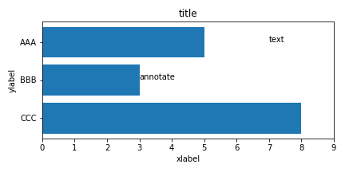
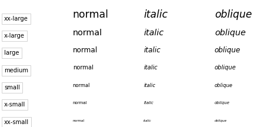
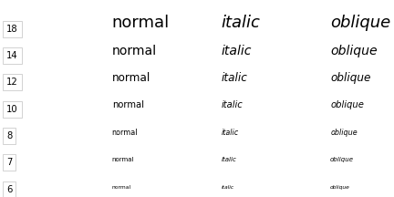
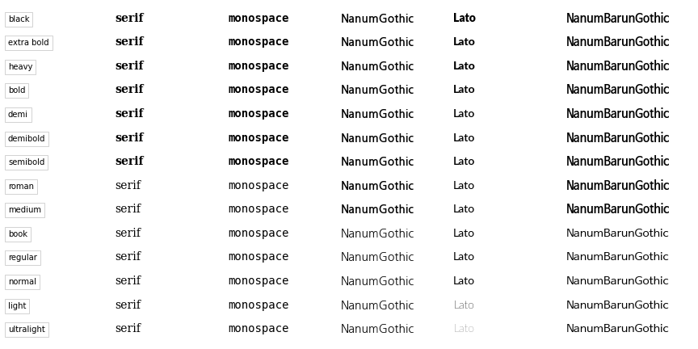
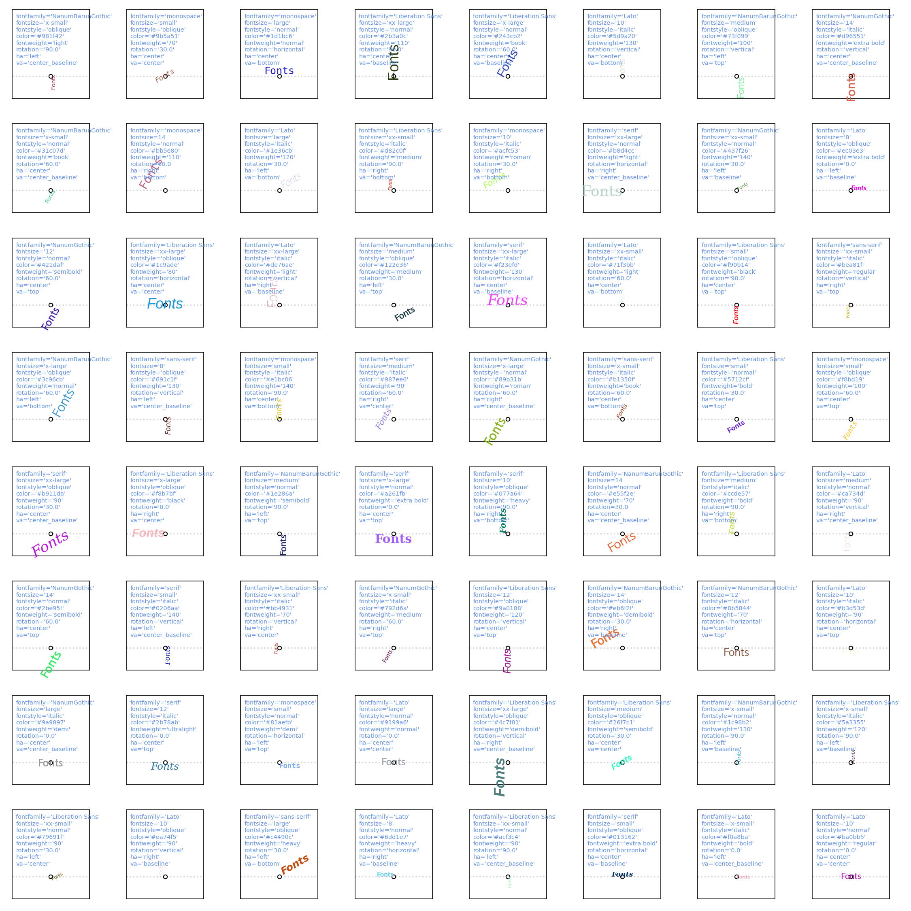

- 데이터 시각화 결과물에는 글자가 많이 들어갑니다.
- 축 레이블, 눈금 레이블, 타이틀 뿐 아니라 그림 위에 데이터를 명시하기도 합니다.
- 글꼴, 글자 크기, 스타일 등을 자유자재로 다뤄봅니다.
1. Matplotlib 글꼴
matplotlib.axes.Axes.text
matplotlib.font_manager
matplotlib User’s Guide #Text properties and layout
Pega Devlog: Matplotlib Defaults & Fonts
그림 곳곳에는 글자가 있습니다.
1
2
3
4
5
6
7
8
9
10
11
12
13
14
15
16
17
18
19
20
21
22
23
24
25
26
27
28
29
30# sample data
X = ["AAA", "BBB", "CCC"]
Y = [500, 300, 800]
# Figure, Axes 생성
fig, ax = plt.subplots(figsize=(6,3))
# 가로 bar plot
ax.barh(X, Y)
# xticklabels
xticks = ax.get_xticks()
ax.set_xticks(xticks)
ax.set_xticklabels([f"{int(x/100):d}" for x in xticks])
# yticks
ax.invert_yaxis()
# labels
ax.set_xlabel("xlabel")
ax.set_ylabel("ylabel")
# title
ax.set_title("title")
# text & annotation
ax.text(700, 0, "text")
ax.annotate("annotate", (Y[1], 1))
fig.tight_layout()
글꼴(font), 크기, 스타일, 굵기(weight) 등은 적절하게 바뀌어 사용되어야 합니다.
- 세 가지 방법을 사용해서 바꿀 수 있습니다.
- 1. 매개변수를 직접 전달:
fontsize,fontweight,fontstyle을 사용합니다. - 2. 글꼴 세팅 저장 (1):
matplotlib.font_manager.FontProperties()를 사용해 세팅을 전달합니다. - 3. 글꼴 세팅 저장 (2): fontdict를 사용해 전달합니다.
- 1. 매개변수를 직접 전달:
- 2번과 3번에 대한 글은 과거에 정리를 했습니다.
- 여기서는 매개변수에 따른 변화만 정리합니다.
2. fontstyle & fontsize
fontstyle은 [“normal”, “italic”, “oblique”]가 가능하지만 italic과 oblique는 동일합니다.fontsize는string과 포인트 크기로 설정할 수 있습니다.- 함께 묶어서 그려보겠습니다. 먼저 string으로 설정한 경우입니다.
1
2
3
4
5
6
7
8
9
10
11fontsizes = ['xx-small', 'x-small', 'small', 'medium', 'large', 'x-large', 'xx-large']
fontstyles = ['normal', 'italic', 'oblique']
fig, ax = plt.subplots(figsize=(6,3), sharex=True, sharey=True, constrained_layout=True)
for j, fontsize in enumerate(fontsizes):
ax.text(0.01, 0.14*j+0.01, f"{fontsize}", bbox={"boxstyle":"square", "pad":0.4, "facecolor":"w", "edgecolor":"lightgray"})
for i, fontstyle in enumerate(fontstyles):
ax.text((i+1)*0.3, 0.14*j+0.03, f"{fontstyle}", fontsize=fontsize, fontstyle=fontstyle)
ax.axis(False)
- string의 [‘xx-small’, ‘x-small’, ‘small’, ‘medium’, ‘large’, ‘x-large’, ‘xx-large’]은
- 숫자 형식으로는 [6, 7, 8, 10, 12, 14, 18]에 대응됩니다.
1
2
3
4
5
6
7
8
9
10
11fontsizes = [6, 7, 8, 10, 12, 14, 18]
fontstyles = ['normal', 'italic', 'oblique']
fig, ax = plt.subplots(figsize=(6,3), sharex=True, sharey=True, constrained_layout=True)
for j, fontsize in enumerate(fontsizes):
ax.text(0.01, 0.14*j+0.01, f"{fontsize}", bbox={"boxstyle":"square", "pad":0.4, "facecolor":"w", "edgecolor":"lightgray"})
for i, fontstyle in enumerate(fontstyles):
ax.text((i+1)*0.3, 0.14*j+0.03, f"{fontstyle}", fontsize=fontsize, fontstyle=fontstyle)
ax.axis(False)
3. fontfamily & fontweight
글꼴은
fontfamily, 두께는fontweight로 변경합니다.그리고 두께는 글꼴에 따라 적용되는 정도가 다릅니다.
1
2
3
4
5
6
7
8
9
10
11
12
13fontweights = ['ultralight', 'light', 'normal', 'regular', 'book', 'medium', 'roman', 'semibold', 'demibold', 'demi', 'bold', 'heavy', 'extra bold', 'black']
fontfamilies = ["serif", "monospace", "NanumGothic", "Lato", "NanumBarunGothic"]
fig, ax = plt.subplots(figsize=(12,6), sharex=True, sharey=True, constrained_layout=True)
for j, fontweight in enumerate(fontweights):
ax.text(0.01, 0.05*j+0.03, f"{fontweight}", bbox={"boxstyle":"square", "pad":0.4, "facecolor":"w", "edgecolor":"lightgray"})
for i, fontfamily in enumerate(fontfamilies):
ax.text((i+1)*0.2, 0.05*j+0.03, f"{fontfamily}", fontsize=14, fontweight=fontweight, fontfamily=fontfamily)
ax.set_xlim(0, 1.23)
ax.set_ylim(0, 0.72)
ax.axis(False)
옵션에 따라 굵어지는 지점이 다릅니다.
- serif, monospace는 semibold부터,
- NanumGothic과 NanumBarunGothic은 medium부터 굵어집니다.
- 그리고 Lato는 여러 단계로 나뉩니다.
4. fonts random cheatsheet
- Matplotlib의 fonts 옵션은
.plot()만큼이나 다양합니다.fontfamily: 글꼴fontsize: 글꼴 크기fontstyle: 일반 vs 기울임fontweight: 글꼴 굵기rotation: 회전haorhorizontalalignment: 가로 정렬vaorverticalalignment: 세로 정렬
- 모든 효과를 나열하여 보기 힘들기 때문에 여러 매개변수를 적용한 표를 만듭니다.
- 실행할 때마다 랜덤으로 다른 옵션이 적용됩니다.
1
2
3
4
5
6
7
8
9
10
11
12
13
14
15
16
17
18
19
20
21
22
23
24
25
26
27
28
29
30
31
32
33
34
35
36
37
38
39
40
41
42
43
44
45
46
47
48
49
50
51
52from matplotlib import colors
fig, axes = plt.subplots(ncols=8, nrows=8, figsize=(15, 15), sharex=True, sharey=True)
axs = axes.ravel()
fontfamilies = ["serif", "sans-serif", "monospace", "NanumGothic", "Lato", "NanumBarunGothic", "Liberation Sans"]
fontsizes = ['xx-small', 'x-small', 'small', 'medium', 'large', 'x-large', 'xx-large'] + list(range(8, 16, 2))
fontstyles = ['normal', 'italic', 'oblique']
fontweights = ['ultralight', 'light', 'normal', 'regular', 'book', 'medium', 'roman', 'semibold', 'demibold', 'demi', 'bold', 'heavy', 'extra bold', 'black'] + list(range(70, 150, 10))
rotations = list(np.linspace(0, 90, 4)) + ["vertical", "horizontal"]
has = ["center", "left", "right"]
vas = ['center', 'top', 'bottom', 'baseline', 'center_baseline']
len_ff = len(fontfamilies)
len_fsize = len(fontsizes)
len_fstyle = len(fontstyles)
len_fweight = len(fontweights)
len_rot = len(rotations)
len_ha = len(has)
len_va = len(vas)
for ax in axs:
fontfamily = fontfamilies[np.random.choice(len_ff)]
fontsize = fontsizes[np.random.choice(len_fsize)]
fontstyle = fontstyles[np.random.choice(len_fstyle)]
fontweight = fontweights[np.random.choice(len_fweight)]
color = colors.to_hex([np.random.random(), np.random.random(), np.random.random()])
rotation = rotations[np.random.choice(len_rot)]
ha = has[np.random.choice(len_ha)]
va = vas[np.random.choice(len_va)]
ax.text(0, -1, "Fonts",
fontfamily=fontfamily, fontsize=fontsize, fontstretch=fontstretch,
fontstyle=fontstyle, fontweight=fontweight, color=color,
rotation=rotation, ha=ha, va=va)
ax.scatter(0, -1, s=20, c="w", ec="k", zorder=2)
ax.axhline(-1, ls=":", c="lightgray", zorder=1)
ax.set_xlim(-2, 2)
ax.set_ylim(-2, 2)
ax.set_xticks([])
ax.set_yticks([])
for text_y, e in zip(np.linspace(0.9, 0.3, 9), ["fontfamily", "fontsize", "fontstretch", "fontstyle", "color", "fontweight", "rotation", "ha", "va"]):
param = f"{e}={eval(e)}"
if (e in ["fontfamily", "fontstyle", "color", "fontweight", "ha", "va"]) \
or isinstance(fontsize, str) or isinstance(rotation, str) or isinstance(fontstretch, str) or isinstance(fontweight, str):
param = param.replace("=", "='") + "'"
ax.text(0.05, text_y, param, transform=ax.transAxes, fontsize="x-small", color="cornflowerblue")
fig.set_facecolor("w")
fig.tight_layout()